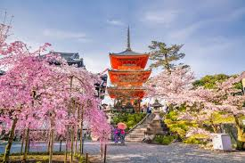

Japan is a destination like no other, where time-honored traditions elegantly intertwine with cutting-edge innovation. If you're searching for a travel experience that embodies both rich history and modern vibrancy, Japan should be at the forefront of your plans. Picture yourself wandering through the dazzling, neon-lit streets of Tokyo, then finding tranquility in the historic temples of Kyoto. This extraordinary island nation enchants every visitor with its unparalleled culture, exquisite cuisine, and stunning landscapes. Don’t miss out on the unforgettable adventures that await—make Japan your next travel choice!

Tokyo: The City That Never Sleeps Tokyo, the vibrant capital of Japan, invites you to experience a captivating blend of dazzling lights, impressive skyscrapers, and a plethora of entertainment options. Picture yourself at Shibuya Crossing, the busiest pedestrian intersection in the world, where you can truly feel the heartbeat of this dynamic city. Delve into Akihabara, a haven for anime aficionados and tech lovers, or stroll through the trendy streets of Harajuku, where you’ll discover cutting-edge fashion and mouthwatering street food that tantalizes the senses.
To enrich your journey, don’t miss the chance to visit Asakusa’s Senso-ji Temple, the oldest Buddhist temple in Tokyo. Here, the serene ambiance stands in striking contrast to the modern skyline, allowing you to appreciate the city's rich history alongside its contemporary allure. Tokyo is not just a destination; it's an experience that promises to leave you inspired and wanting more.
Kyoto: The Heart of Japan’s Heritage Kyoto stands out as the perfect destination for those looking to immerse themselves in history. Once the imperial capital, this city is home to more than 2,000 temples and shrines, each exuding an enchanting sense of timeless beauty. A visit to the Fushimi Inari Shrine, renowned for its thousands of striking vermillion torii gates, is an experience not to be missed. Equally impressive is Kinkaku-ji, the stunning Golden Pavilion, which captivates with its radiant architecture.
Throughout the year, Kyoto transforms into a breathtaking landscape. In spring, the city becomes a picturesque wonderland as cherry blossoms adorn the Philosopher’s Path, creating a dreamy atmosphere. As autumn arrives, the Arashiyama Bamboo Forest and the nearby Togetsukyo Bridge come alive with vibrant hues, offering a stunning contrast to the green bamboo groves. Don't miss the chance to explore this historic city and witness its unparalleled beauty firsthand.

Osaka: The Kitchen of Japan Osaka, often hailed as the culinary heart of Japan, is an absolute must-visit for anyone passionate about food. Picture yourself wandering the lively streets of Dotonbori, where dazzling neon signs light up the night and delectable street foods beckon at every corner. Make sure you indulge in takoyaki, those irresistible octopus balls, and savor the unique flavors of okonomiyaki, the savory pancakes that are a local staple.
But Osaka offers more than just tantalizing dishes. Take a step back in time at the majestic Osaka Castle, a testament to Japan's rich samurai heritage, or immerse yourself in the eclectic atmosphere of the Shinsekai District, where nostalgia beautifully intertwines with contemporary entertainment. Don’t miss out on experiencing this vibrant city—your taste buds will thank you!